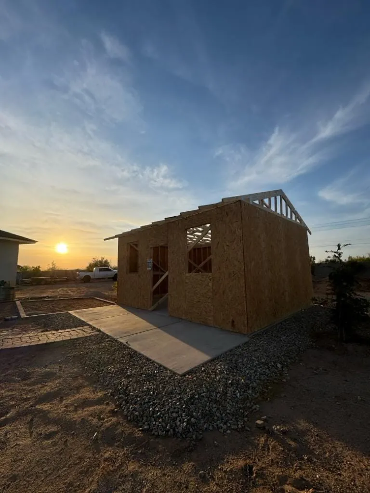
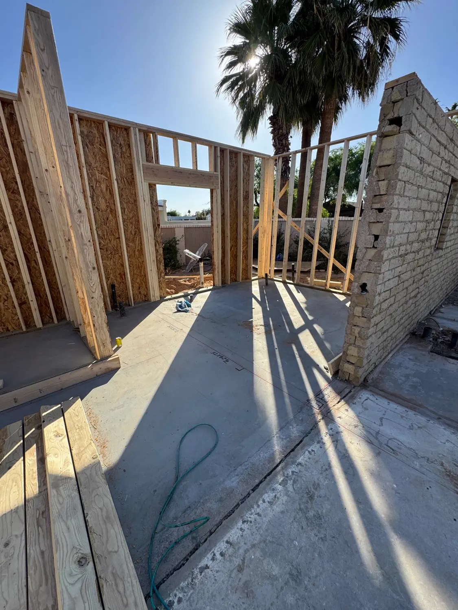

Service Areas Across Arizona
Quest Construction builds in 34 Arizona cities. Each one permits differently and each one has its own housing stock — the pages below say how.
— Eleven cities
Where Quest Builds
One crew, one licence, one phone number across the East Valley, Phoenix and Pinal County.
01 Phoenix, AZ
Phoenix covers the widest range of housing in the state, from 1920s bungalows near the centre to homes finished last year. We do not carry one approach across all of it. A century-old lath-and-plaster wall and a 2015 truss roof are different problems that happen to share a city.
- City of Phoenix permitting
- Bungalow through new-build stock
- Historic district overlays
- Block construction and panel capacity
02 Mesa, AZ
Mesa runs its own Development Services department, so a permit here is a City of Mesa submittal rather than a county one. We build the review window into the programme up front, because starting demolition against a permit that has not cleared is how a remodel loses three weeks it never gets back.
- City of Mesa permitting
- Slab-on-grade and block construction
- Weathered stucco matching
- HOA review in east Mesa
03 Chandler, AZ
Chandler spans a wide range of vintages, from established neighbourhoods near the historic centre to newer development further south. We scope each accordingly rather than assuming a Chandler address implies a particular construction type.
- Mixed vintages across the city
- Kitchen and bathroom remodels
- Tile roof and stucco maintenance
- Sound structure, dated finishes
04 Glendale, AZ
Glendale runs its own building safety division, so a permit here is a City of Glendale submittal. The city has its own historic district rules around the downtown core, and a project inside one of them is a different application from the same job three streets away.
- City of Glendale permitting
- Historic district rules downtown
- Pre-war fabric and 2000s production side by side
- Flood irrigation on older lots
05 Scottsdale, AZ
Scottsdale expects a higher standard of documentation than most valley cities, and its design review is genuinely enforced. We plan for that: elevations, materials and colours get settled and submitted before anyone orders anything, because a rejected finish schedule is far cheaper on paper than on a wall.
- Documented design review
- Older ranch and newer HOA stock
- Hillside and drainage constraints
- West-elevation sun exposure
06 Gilbert, AZ
Gilbert is largely master-planned, and a great deal of its housing went up through the 1990s and 2000s. That stock is now hitting its first real renewal cycle, which is why so much of our work here is tile roof underlayment, mechanical replacement and original kitchens that have simply reached the end of their service life.
- 1990s and 2000s master-planned stock
- Tile underlayment renewal
- Active architectural committees
- Repeating builder details
07 Tempe, AZ
Tempe is landlocked and effectively built out, so almost everything we do here is infill, remodel or addition rather than new ground. Lots are small and neighbours are close, which makes staging, dust control and working hours part of the plan rather than an afterthought.
- Infill and remodel work
- Tight lots and close neighbours
- Mid-century ranch stock
- Alley access where available
08 Peoria, AZ
Peoria permits through its own development and engineering department, and the city runs long north to south — which matters more here than in most valley cities, because the two ends are different building problems.
- City of Peoria permitting
- Older south, master-planned north
- HOA review above the 101
- Production-builder finishing work
09 Surprise, AZ
Surprise permits through its own development services department. Nearly all of the city as a homeowner knows it was built after 1998, so the fabric is consistent in a way older valley cities are not: slab-on-grade, engineered truss roofs, stucco over frame.
- City of Surprise permitting
- Almost entirely post-1998 stock
- Additions rather than repairs
- Age-restricted community access rules
10 Avondale, AZ
Avondale permits through its own development services department. The city sits between the older west valley and the newer growth beyond it, and its housing reflects that — a small older core around historic Avondale and a much larger body of late-1990s and 2000s subdivisions.
- City of Avondale permitting
- Small older core, large 2000s tracts
- Patio and garage conversions
- Narrow side-yard access
11 Goodyear, AZ
Goodyear permits through its own development services department, and it is one of the fastest-growing cities in the valley — which means most of what we work on here is younger than twenty-five years old.
- City of Goodyear permitting
- Newer production-built stock
- Outdoor living and casitas
- Soil movement and lot drainage
12 Buckeye, AZ
Buckeye permits through its own development services department, and it has been among the fastest-growing cities in the country for several years running. The practical effect is that the housing stock here is the newest we work on anywhere in the valley.
- City of Buckeye permitting
- The newest stock in the valley
- Shade structures and ramadas
- Long distances inside one city
13 Queen Creek, AZ
Queen Creek has grown quickly, and that shows in what we are asked to build. Lots are generally larger than the inner valley, and a good share of our work involves shops, casitas, extended garages and outdoor living space that simply would not fit on a Tempe or Scottsdale lot.
- Larger lots and outbuildings
- Well and septic on rural parcels
- Long utility runs
- Recent stock, builder coverage
14 Maricopa, AZ
The City of Maricopa is in Pinal County, not Maricopa County — a distinction that catches people out and matters here, because it means a different jurisdiction from most of the valley. The city runs its own development services department and a permit is a City of Maricopa submittal.
- Pinal County, not Maricopa County
- City of Maricopa permitting
- Almost entirely post-2000 stock
- Scheduled in full days, not half
15 Apache Junction, AZ
Apache Junction runs its own development services department, so the building permit is the city's. The city straddles the county line with most of it in Pinal rather than Maricopa, and which side a parcel sits on still changes the county-level paperwork around it.
- City of Apache Junction permitting
- Mostly Pinal County, part Maricopa
- Manufactured and site-built side by side
- Rock, slope and unpaved approaches
16 El Mirage, AZ
El Mirage runs its own building department, and it is a small enough city that a project here is dealt with directly rather than lost in a queue. A permit is a City of El Mirage submittal.
- City of El Mirage permitting
- Small older core, 2000s ring
- Roofing and stucco over block
- Tight lots and narrow streets
17 Fountain Hills, AZ
Fountain Hills is a town with its own government and its own building department, and it takes hillside building seriously. Slope, height, cut and fill, and the protected washes running through the town all shape what will actually be permitted, so a project here starts with what the town will approve rather than with a floor plan.
- Town of Fountain Hills permitting
- Hillside and wash provisions
- Custom homes on stepped foundations
- Steep access and tight turnarounds
18 Litchfield Park, AZ
Litchfield Park is its own city with its own permitting, and it is small — a few square miles with a mature character the city actively protects. Design review here is real, and matching the existing streetscape matters more than it does in a newer suburb.
- City of Litchfield Park permitting
- Design review and streetscape matching
- Mid-century fabric, mature canopy
- Roots near footings, uneven roof wear
19 Tolleson, AZ
Tolleson runs its own building department and a permit here is a City of Tolleson submittal. It is a compact city, and the residential ground sits close to substantial industrial and distribution property, which shapes both the housing and the way we work in it.
- City of Tolleson permitting
- Older modest single-storey stock
- Correcting unpermitted alterations
- Delivery timed around industrial traffic
20 Youngtown, AZ
Youngtown is a town with its own permitting, and it is one of the smallest municipalities in the valley — small enough that most of the housing came out of a single era and shares a single set of problems.
- Town of Youngtown permitting
- 1950s retirement-era stock
- Panel and service capacity limits
- Reconfiguration over extension
21 Wickenburg, AZ
Wickenburg is a town with its own building department, sitting at the north-west edge of the valley where the metro genuinely ends. It is far enough out that we plan a project here as a committed run rather than as a job a crew drops into between others.
- Town of Wickenburg permitting
- Historic masonry and adobe downtown
- Ranch acreage on well and septic
- Breathable finishes on historic walls
22 Carefree, AZ
Carefree is a town with its own government and its own building rules, and they are protective of how the place looks. Height, colour, lighting and how a building sits against the desert are all live questions here, and a design that ignores them does not get built.
- Town of Carefree permitting
- Height, colour and lighting review
- Rock excavation and boulder lots
- Dark-sky exterior lighting
23 Cave Creek, AZ
Cave Creek is a town with its own permitting, and building here is closer to rural work than suburban work despite being inside the metro. Lots are large, the desert is protected, and what is allowed to be cleared is limited.
- Town of Cave Creek permitting
- County septic, state well permits
- Rock close to the surface
- Washes and desert clearing limits
24 Paradise Valley, AZ
Paradise Valley is a town rather than part of Phoenix, and it governs building on its own terms. Setbacks, height and hillside provisions are taken seriously here, and any serious project starts with what the town will actually permit rather than with a floor plan.
- Town of Paradise Valley permitting
- Hillside and setback provisions
- Large custom homes
- Access and staging on narrow roads
25 Guadalupe, AZ
Guadalupe is a town of roughly one square mile with its own government and its own permitting, bordered on all sides by Tempe and Phoenix. It is a distinct community with a long Yaqui and Mexican history, and building here means working in a place where neighbours know each other and a jobsite is visible to everyone.
- Town of Guadalupe permitting
- Dense small-lot single-storey stock
- Layered self-built additions
- Narrow streets, contained site
26 Laveen, AZ
Laveen is part of the City of Phoenix rather than a separate municipality, so work inside the city limits permits through Phoenix. Its southern edge runs up against the Gila River Indian Community, which is sovereign ground with its own building safety department and its own adopted codes — a project a few streets the wrong side of that line is a different jurisdiction entirely, not a Phoenix permit. We establish which side a parcel sits on before anything else.
- City of Phoenix, or tribal jurisdiction south
- Former farmland, 2000s tracts
- Agricultural soils under new slabs
- Flood irrigation rights and timing
27 Sun City, AZ
Sun City is unincorporated Maricopa County rather than a city, so a permit here is a county submittal rather than a municipal one. That is a different process from the cities around it, and it is the first thing we establish on a Sun City project.
- Maricopa County permitting
- 1960s age-restricted stock
- Low-slope built-up roofs
- Separate Sun City Fire District permit
28 Sun City West, AZ
Sun City West is unincorporated Maricopa County, so building permits are county submittals rather than city ones. It is a separate community from Sun City with its own recreation governance, and the two are often confused.
- Maricopa County permitting
- 1978 onward, larger than Sun City
- Pitched tile roofs
- Dust containment on interior work
29 San Tan Valley, AZ
San Tan Valley spent decades as one of the largest unincorporated communities in Arizona and became a town on 1 July 2026. Permitting is mid-handover and it is a two-step until the changeover completes: a zoning clearance from the Town first, then the building permit itself from Pinal County with that clearance attached. The County is processing permits under an intergovernmental agreement to the end of 2026, with the Town expected to take it over during 2027. We confirm which path is live at the time of your project rather than assuming.
- Town zoning clearance, Pinal County permit
- 2000s production-built tracts
- Shade structures and casitas
- Adjacent to our Queen Creek work
30 Anthem, AZ
Anthem is unincorporated Maricopa County rather than a city, so a permit here is a county submittal. It sits north of the valley on the way to Flagstaff, high enough that the weather is genuinely different from Phoenix.
- Maricopa County permitting
- HOA architectural review on both sides
- Master-planned 1999 onward
- Higher elevation, harder weather
31 Deer Valley, AZ
Deer Valley is one of the City of Phoenix urban villages, not a separate municipality, so work here permits through Phoenix. It covers a large area of north Phoenix either side of the I-17.
- Permits through City of Phoenix
- 1980s to 2000s suburban stock
- Roof, panel and plant due together
- Deer Valley Airport Overlay district
32 North Phoenix, AZ
North Phoenix is a colloquial name rather than a jurisdiction. Most of what people mean by it sits inside the City of Phoenix, spread across several urban villages, and permits through the city — but the northern fringe runs out into unincorporated Maricopa County, where the permit is a county submittal instead. We confirm the parcel before quoting, because the two processes are not the same and neither is the timeline.
- City of Phoenix, or county at the fringe
- Several urban villages, one process
- 1970s block through current build
- Rock and slope at the northern edge
33 South Phoenix, AZ
South Phoenix is part of the City of Phoenix and the parts inside the city limits permit through it, across several urban villages under the north face of South Mountain. South and west of there the ground becomes the Gila River Indian Community, which is sovereign and runs its own building safety on its own adopted codes. That boundary is the first thing we check, because it decides who issues the permit and which code edition the job is built to.
- City of Phoenix inside the city limits
- Pre-war fabric and recent infill
- Unpermitted additions to establish
- Flood irrigation and mature trees
34 Ahwatukee, AZ
Ahwatukee is part of the City of Phoenix and permits through it, despite sitting on the far side of South Mountain from the rest of the city and feeling like its own town. It is the Ahwatukee Foothills urban village on the city's paperwork.
- Permits through City of Phoenix
- 1980s to early 2000s stock
- HOA architectural review
- Foothill slope and limited access
— Across the valley
Arizona Jobs, Arizona Photographs
Palms on one job, open desert on the next — both ours.




— In every city
The Same Fourteen Trades
Everything Quest offers is available in all 34 cities above.

Tell us where the job is
Local, family-owned experts in quality building solutions — reachable 24/7 on (602) 399-6455.